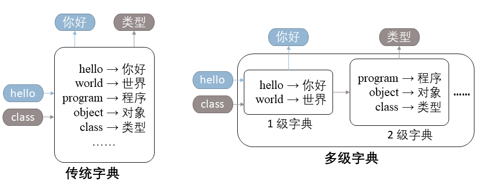

小肖的饭店倒闭了，他痛定思痛，决定改行做一名程序员。
最近，小肖在学习字典这种数据结构。我们都知道，字典是存储键值对（Key-value Pair）的数据结构，如下左图中的
hello
你好 即是一个键值对，其中 hello 是键（Key），你好
是值（Value）。传统的字典允许用户根据键查找对应的值。在 C++ 中，我们可以使用 std::map 来构建一个字典。
在学习过程中，小肖突发奇想设计了一种多级字典，在传统字典功能的基础上将字典分为多个层级，并在查询时逐层访问，如下右图所示。具体来说，当我们希望查找一个键值对时，我们会先访问 1 级字典，如果找到，则直接返回结果；否则，我们将继续访问下一级字典，直到找到结果或访问至最后一级字典为止。

在实际应用中，我们可以精心设置各级字典的容量上限，在不同层级中存储不同的键值对，并使用不同的数据结构维护它们，来达到更高的效率。但在本题中，你无需过度关注效率，而是需要实现一个简易的多级字典的模拟器，来帮助小肖统计真实场景下各级字典的命中率。
我们设置了 4 个任务来引导你循序渐进地完成本题，我们强烈建议你依次完成它们，当然，你也可以选择直接完成整道题目的完整要求（即子任务 4）。
点击此处下载本题下发文件。
子任务 1、2 之间相互独立，你可以跳过子任务 1 先完成子任务 2。
请你实现模板类
template<class Key, class Value> class MyDict，支持如下接口：
operator[] (key)：根据键 key
返回对应的值的引用。该运算符的行为可以分两种情况讨论。key 存在于字典中，则直接返回对应值的引用。key 不存在，则使用值类型的默认构造函数进行初始化（即
Value()），并返回该引用。hitStats()（常量成员函数）：返回一个 HitStatsResult
类型的对象，记录过去所有下标运算符 [] 的访问中，命中 / 缺失的次数。HitStatsResult 类，你可以直接使用
HitStatsResult(hit, miss) 来构造一个对象，其中
hit 和 miss 分别代表命中次数和缺失次数。size()（常量成员函数）：返回字典中存储的键值对数量。clear()：清空当前字典存储的所有键值对，同时清空访问命中率的统计数据。提示：上述大部分接口与 std::map 类似，因此我们建议你借助 std::map
来大大简化你的代码，同时达到足以通过本题的速度。
样例详见下发文件的 subtask1/
子目录（提交时请勿包含该子文件夹，而是与平时作业类似直接打包代码文件。详见《提交要求》）。
在多级字典中，我们常常面临一个问题：某级字典存储的内容超过了容量限制，需要选择一个键值对弹出（Pop）当前字典，并插入下一级字典。
在这个子任务中，你只需要实现 2 种不同的弹出策略：
FIFOStrategy：先进先出（First in First out，FIFO）策略，弹出最早被插入的元素。
LRUStrategy：最近最少使用（Least Recently
Used，LRU）策略，弹出最长时间未被访问的元素。具体地，这 2 种弹出策略应当继承基类 PopStrategy，并支持如下接口：
visit(key)：表示一次对键 key 的访问。pop()：按对应规则弹出一个元素，并返回被弹出的键。本题中，我们保证调用 pop
操作时至少有 1 个未被弹出的元素。需要注意的是，所有键只有在首次访问时或移除后首次访问时被视作插入。
下面的代码片段是一个例子，展示了插入、访问、弹出的关系，同时说明了 FIFO 策略与 LRU 策略的差异：
FIFOStrategy<char> fifo;
fifo.visit('a');
fifo.visit('b');
fifo.visit('a');
fifo.visit('c');
std::cout << fifo.pop() << std::endl; // 输出为 a，因为 a 是最早被插入的元素
fifo.visit('a');
std::cout << fifo.pop() << std::endl; // 输出为 b，因为弹出 a 后再访问视作重新插入，因此 b 是此时最早被插入的元素
LRUStrategy<char> lru;
lru.visit('a');
lru.visit('b');
lru.visit('a');
lru.visit('c');
std::cout << lru.pop() << std::endl; // 输出为 b，因为 b 是最长时间未被访问的元素
lru.visit('a');
std::cout << lru.pop() << std::endl; // 输出为 c，因为此时 c 是最长时间未被访问的元素
假设
表示某 PopStrategy 某一时刻维护的元素数目，那么在本题中，我们保证 。例如，在上面的代码段中，
最大时达到 。
提示：
visit 和 pop 函数即可。样例详见下发文件的 subtask2/
子目录（提交时请勿包含该子文件夹，而是与平时作业类似直接打包代码文件。详见《提交要求》）。
基于子任务 1 实现的 MyDict 类，请结合子任务 2 实现的不同弹出策略，实现支持容量限制的
MyDict。具体地，你需要在子任务 1 需求的基础上额外支持两个构造函数：
MyDict()：默认构造函数，构造一个与子任务 1 要求一致的无容量限制的 MyDict
对象。MyDict(int capacity, PopStrategy<Key>* popStrategyPtr)：构造一个容量上限为
capacity 的 MyDict，在字典超过容量限制时，使用
popStrategyPtr 指向的对象选择一个键值对，将其弹出字典。capacity 不超过 。
提示：
operator[] 后发生。样例详见下发文件的 subtask3/
子目录（提交时请勿包含该子文件夹，而是与平时作业类似直接打包代码文件。详见《提交要求》）。
基于子任务 3 的附带容量限制、弹出策略的 MyDict，我们可以继续开发得到最终版本的多级字典模拟器。具体地，你需要在子任务
3 的基础上，额外支持构造函数：
MyDict(int capacity, PopStrategy<Key>* popStrategyPtr, MyDict* nextLevelPtr)：构造一个容量上限为
capacity 的 MyDict，其下一级子字典为
nextLevelPtr 指向的对象。在字典超过容量限制时，使用
popStrategyPtr 指向的对象选择一个键值对，将其弹出当前字典，并插入下一级子字典。capacity 不超过 。
对于多级字典，我们对所有接口有如下拓展定义：
operator[] (key)：根据键 key 返回对应的值的引用。与子任务
1 类似地，我们分两种情况讨论其行为。key 存在于当前字典中，则直接返回对应值的引用。key 不存在于当前字典中，则在下一级子字典中递归调用
operator[] 查找：
Value()），将其插入当前字典，并返回该引用。key
必然存在于子字典中，则将查找到的键值对从子字典中弹出，并插入当前字典后返回其引用。popStrategyPtr
指向的对象选择一个键值对，将其弹出当前字典，并 递归调用 operator[]
插入下一级子字典。hitStats()（常量成员函数）：返回一个 HitStatsResult
类型的对象，记录过去所有下标运算符 [] 的访问中，所有层级字典的命中 /
缺失次数。HitStatsResult 类，你可以直接使用
HitStatsResult(hitArray, missArray) 来构造一个对象，其中
hitArray 和 missArray
分别代表各级字典的命中数和未命中数，使用 std::vector 表示，其中
hitArray[i]，missArray[i] 分别表示第
级字典的命中次数、缺失次数。+ 运算符拼接两个 HitStatsResult，如：假设 1
级字典的结果为 res_1，2 级字典及其所有子字典的结果为
res_2，则你可以使用 res_1 + res_2 来得到完整的结果。
size()（常量成员函数）：返回当前字典及所有子字典中存储的键值对数量总和。
clear()：清空当前字典及所有子字典存储的所有键值对，同时清空它们的命中率统计数据。
提示：本题实现的多级字典仅供模拟使用，因此你不需要过度关注性能。
样例详见下发文件的 subtask4/
子目录（提交时请勿包含该子文件夹，而是与平时作业类似直接打包代码文件。详见《提交要求》）。
不论你想要提交哪些子任务，你都只需要使用 zip 格式打包 MyDict.hpp（对于子任务 1、3、4）和
PopStrategy.hpp（对于子任务
2、3、4），并提交这个压缩包。压缩包中不应包含任何子文件夹，换而言之，解压你提交的压缩包，应直接得到上述两个 hpp
文件，而不是包含这两个文件的一个或多个子文件夹。
你不能修改、也不必提交
main.cpp、Makefile、HitStatsResult.hpp，在评测时，OJ
会将提供的文件贴入你的目录下进行编译并执行。
本题的子任务不使用捆绑测试。具体地，每个子任务都包含 2 个样例测试点和若干个隐藏测试点。样例测试点与下发文件完全一致，占子任务 的分数；隐藏测试点占子任务剩余 的分数。
子任务、测试点编号的对应关系如下：
| 子任务 | 样例测试点编号 | 每个样例测试点分值 | 隐藏测试点编号 | 每个隐藏测试点分值 | 总分值 |
|---|---|---|---|---|---|
| 1 | 1~2 | 4 分 | 3~4 | 6 分 | 20 分 |
| 2 | 5~6 | 6 分 | 7~8 | 9 分 | 30 分 |
| 3 | 9~10 | 4 分 | 11~12 | 6 分 | 20 分 |
| 4 | 13~14 | 6 分 | 15~17 | 6 分 | 30 分 |
本题样例的 Makefile 中定义的宏
__SUBTASK1__、__SUBTASK2__、__SUBTASK3__、__SUBTASK4__
在隐藏测例中同样存在。事实上，这些宏并不是完成本题所必要的，但你仍可以利用它们帮助你处理不同的子任务。
你不需要特别考虑时间、空间效率。具体地，我们保证：
MyDict 至多为 5 级字典。MyDict 的成员函数（包括构造函数、运算符重载等）的总次数不超过
次。PopStrategy 及其派生类的成员函数。
capacity 不超过 32）。这意味着你可以放心大胆地实现单次计算时间复杂度为
的弹出策略。| # | 名称 | 编译器 | 额外参数 | 代码长度限制 |
|---|---|---|---|---|
| 0 | oop_custom | make |
65536 B |